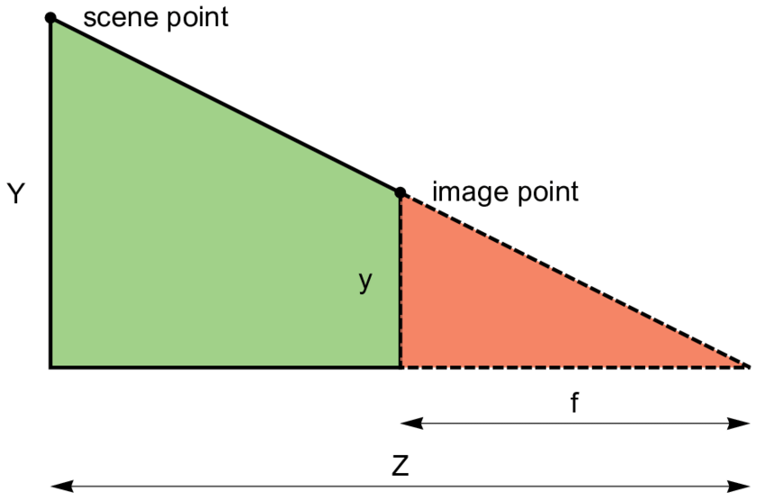
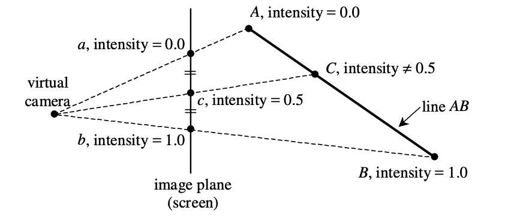
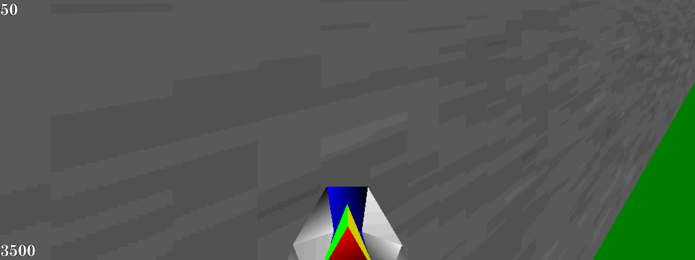
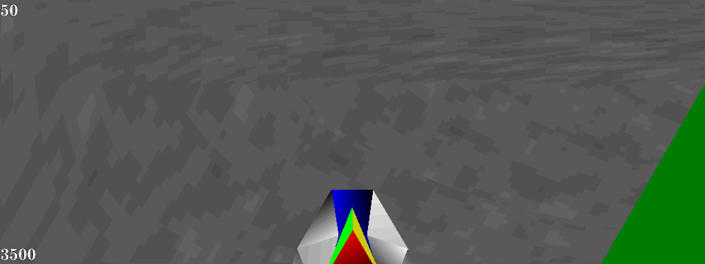

Perspective-Correct Interpolation
...and why the original PlayStation had textures that warped when the camera moved
- Discussion on Hacker News.
When implementing my differentiable renderer, I re-learned how rasterization works. In doing so I came across my favorite
piece of code for the month: perspective-correct interpolation. Every modern rasterization pipeline implements this somewhere, but old rasterizers sometimes
didn't. In this post we'll go over how to do it
When rasterizing a triangle, we need to first project the triangle's vertices onto the screen (image plane), then fill in all the pixels inside of the triangle with the right color.

The projection of a point is found by shooting a ray from the camera origin to the point, then finding where the ray intersects the image plane.
Figuring this out is pretty easy; if we assume that the image plane sits at \(z=1\) in front of the camera, then given a vertex \((x, y, z)\) in camera space,
it must project to the pixel corresponding to \((\frac{x}{z}, \frac{y}{z}, 1)\) in screen space
Filling in a pixel inside the triangle is trickier. Before we consider pixels, let's first consider points on the triangle in world space. We can express a point \(\mathbf{x}\) inside of a triangle as a unique convex combination of the triangle's 3 vertices \(\mathbf{a}, \mathbf{b}, \mathbf{c}\) using barycentric coordinates: 3 numbers \(\lambda_A, \lambda_B, \lambda_C\) where \(\lambda_A + \lambda_B + \lambda_C = 1\) such that $$ \mathbf{x} = \lambda_A \mathbf{a} + \lambda_B \mathbf{b} + \lambda_C \mathbf{c} $$ If we know the barycentric coordinates for \(\mathbf{x}\), we can calculate what color \(\mathbf{I}\) it is by interpolating the colors of the triangle vertices with the barycentric coordinates: $$ \mathbf{I} = \lambda_A \mathbf{I}_A + \lambda_B \mathbf{I}_B + \lambda_C \mathbf{I}_C $$
We can use the matrix form of the above equation to compute the barycentric coordinates of an arbitrary world space \(\mathbf{x}\) with respect to a triangle \(\mathbf{a}, \mathbf{b}, \mathbf{c}\): $$ \mathbf{x} = \begin{bmatrix} \vert & \vert & \vert \\ \mathbf{a} & \mathbf{b} & \mathbf{c} \\ \vert & \vert & \vert \end{bmatrix} \begin{bmatrix} \lambda_A \\ \lambda_B \\ \lambda_C \end{bmatrix} $$ $$ \begin{bmatrix} \lambda_A \\ \lambda_B \\ \lambda_C \end{bmatrix} = \begin{bmatrix} \vert & \vert & \vert \\ \mathbf{a} & \mathbf{b} & \mathbf{c} \\ \vert & \vert & \vert \end{bmatrix}^{-1} \mathbf{x} $$
We can invert the matrix as long as the triangle is non-degenerate (e.g. it has nonzero area when projected). Also, another nice property of barycentrics is that \(\mathbf{x}\) is inside the triangle if and only if \(0 \leq \lambda_A, \lambda_B, \lambda_C \leq 1\), since a triangle is the convex set of its points.
In Python code (because my differentiable renderer is in Python), rasterizing a single triangle might look something like:
def is_inside(screen_space_pt, ss_vertices_T_inv):
"""
screen_space_pt - Array of length 3 representing a point in screen space
ss_vertices_T_inv - 3x3 matrix of floats giving the inverse of the matrix
whose columns are the screen-space coordinates of the
triangle vertices
Input may also be in pixel space, which is the same as screen space
up to a multiplicative factor
"""
ss_barycentric = np.matmul(ss_vertices_T_inv, screen_space_pt)
return np.all(ss_barycentric >= 0)
def rasterize_triangle(vertices, vertex_colors, out_pixels):
"""
vertices - 3x3 array of floats where vertices[i] gives camera-space
coordinates of the ith triangle vertex
vertex_colors - 3x3 array of floats where vertex_colors[i] gives the
RGB colors of the ith triangle vertex
"""
one_over_z = np.array([1/vertex[2] for vertex in vertices])
ss_vertices = vertices * one_over_z
px_vertices_T = (out_pixels.shape[:2] * ss_vertices[:, :2]).T
px_vertices_T_inv = np.linalg.inv(
np.concatenate((px_vertices_T, np.array([[1, 1, 1]])), axis=0))
xmin, xmax, ymin, ymax = compute_bbox(px_vertices_T)
for y in range(ymin, ymax):
if y<0 or y>=out_pixels.shape[1]:
continue
for x in range(xmin, xmax):
if x<0 or x>=out_pixels.shape[0]:
continue
px_pt = np.array([x + 0.5, y + 0.5, 1])
if is_inside(px_pt, px_vertices_T_inv):
barycentric = compute_barycentric(""" TODO """)
out_pixels[x, y] = barycentric.dot(vertex_colors)
Now let's return to screen space. Given an screen space point \(\mathbf{x}^\prime\) that we know is inside the projection \(\mathbf{a}^\prime, \mathbf{b}^\prime, \mathbf{c}^\prime\) of a triangle \(\mathbf{a}, \mathbf{b}, \mathbf{c}\),
how do we compute what barycentric coordinates it corresponds to? In other words, how do we implement compute_barycentric in the code above?
We can compute the barycentric coordinates \(\lambda_A^\prime, \lambda_B^\prime, \lambda_C^\prime\) of \(\mathbf{x}^\prime\) with respect to the projected triangle vertices:
$$
\begin{bmatrix} \lambda_A^\prime \\ \lambda_B^\prime \\ \lambda_C^\prime \end{bmatrix} = \begin{bmatrix} \vert & \vert & \vert \\ \mathbf{a}^\prime & \mathbf{b}^\prime & \mathbf{c}^\prime \\ \vert & \vert & \vert \end{bmatrix}^{-1} \mathbf{x}^\prime
$$
We're already using these coordinates to check whether a screen-space point is inside the triangle above in is_inside, and it works because a projected point is inside the projected triangle
only if its ray also intersects the camera-space triangle.
But we can't use this to interpolate the triangle colors because it wouldn't account for perspective: halfway between two projected triangle vertices is not the same as halfway between the two vertices in world space when the triangle is not parallel to the image plane!

From
Doing this naively is called affine texture mapping, and it's actually what very old game consoles like the PlayStation 1 did. It results in ugly texture warping: not only do textures look wrong on triangles viewed from an angle, but they will move around as the camera moves. As we'll see, doing perspective interpolation correctly requires performing an extra division by the depth of a pixel. This was not only expensive but not possible using hardware acceleration on PS1, which lacked a depth buffer.
In fact, for larger triangles, textures will look obviously wrong. The only reason they don't on most PlayStation 1 games is because developers would break up long triangles into many smaller ones. But this increased the polygon count and hurt the PS1's support for large open worlds like those seen in contemporary N64 games like Ocarina of Time or Super Mario 64.
Rendering Super Mario 64 with PS1-style affine interpolation yields surreal results on the low-poly levels.
 From Retro Computing StackExchange: viewing a slanted wall with perspective correct interpolation (top) vs affine (bottom).
To obtain the perspective-correct points, we express the projected point \(\mathbf{x}^\prime\) in terms of the original camera-space point \(\mathbf{x}\): $$ \mathbf{x} \frac{1}{\mathbf{x}_z} = \begin{bmatrix} \vert & \vert & \vert \\ \mathbf{a}^\prime & \mathbf{b}^\prime & \mathbf{c}^\prime \\ \vert & \vert & \vert \end{bmatrix} \begin{bmatrix} \lambda_A^\prime \\ \lambda_B^\prime \\ \lambda_C^\prime \end{bmatrix} $$ $$ \begin{bmatrix} \vert & \vert & \vert \\ \mathbf{a} & \mathbf{b} & \mathbf{c} \\ \vert & \vert & \vert \end{bmatrix} \begin{bmatrix} \lambda_A \\ \lambda_B \\ \lambda_C \end{bmatrix} \frac{1}{\mathbf{x}_z} = \begin{bmatrix} \vert & \vert & \vert \\ \mathbf{a}^\prime & \mathbf{b}^\prime & \mathbf{c}^\prime \\ \vert & \vert & \vert \end{bmatrix} \begin{bmatrix} \lambda_A^\prime \\ \lambda_B^\prime \\ \lambda_C^\prime \end{bmatrix} $$ Since the projective transformation is equivalent to multiplying each triangle vertex by the reciprocal of its depth, we can factor the right-hand side so that it is applying the exact same transformation as the left-hand side: $$ \begin{bmatrix} \vert & \vert & \vert \\ \mathbf{a} & \mathbf{b} & \mathbf{c} \\ \vert & \vert & \vert \end{bmatrix} \begin{bmatrix} \lambda_A \\ \lambda_B \\ \lambda_C \end{bmatrix} \frac{1}{\mathbf{x}_z} = \begin{bmatrix} \vert & \vert & \vert \\ \mathbf{a} & \mathbf{b} & \mathbf{c} \\ \vert & \vert & \vert \end{bmatrix} \begin{bmatrix} \frac{1}{\mathbf{a}_z} \lambda_A^\prime \\ \frac{1}{\mathbf{b}_z} \lambda_B^\prime \\ \frac{1}{\mathbf{c}_z} \lambda_C^\prime \end{bmatrix} $$ We can invert and are left with an equation with 4 apparent unknowns - the three barycentric coordinates of and the z-component of the unknown original point \(\mathbf{x}\): $$ \begin{bmatrix} \lambda_A \\ \lambda_B \\ \lambda_C \end{bmatrix} \frac{1}{\mathbf{x}_z} = \begin{bmatrix} \frac{1}{\mathbf{a}_z} \lambda_A^\prime \\ \frac{1}{\mathbf{b}_z} \lambda_B^\prime \\ \frac{1}{\mathbf{c}_z} \lambda_C^\prime \end{bmatrix} $$ But actually, we know that barycentric coordinates must sum to one, and so we can solve for \(\frac{1}{\mathbf{x}_z}\) like so! $$ 1 = \mathbf{x}_z (\frac{1}{\mathbf{a}_z} \lambda_A^\prime + \frac{1}{\mathbf{b}_z} \lambda_B^\prime + \frac{1}{\mathbf{c}_z} \lambda_C^\prime) $$ So we arrive at the following formula for the barycentric coordinates of our original point: $$ \begin{bmatrix} \lambda_A \\ \lambda_B \\ \lambda_C \end{bmatrix} = \begin{bmatrix} \frac{1}{\mathbf{a}_z} \lambda_A^\prime \\ \frac{1}{\mathbf{b}_z} \lambda_B^\prime \\ \frac{1}{\mathbf{c}_z} \lambda_C^\prime \end{bmatrix} \frac{1}{(\frac{1}{\mathbf{a}_z} \lambda_A^\prime + \frac{1}{\mathbf{b}_z} \lambda_B^\prime + \frac{1}{\mathbf{c}_z} \lambda_C^\prime)} $$ This formula tells us we can first compute the barycentric coordinates of a projected point in screen-space, then get the real barycentric coordinates of the original, un-projected point by dividing each projected-point coordinate by the vertex depth and normalizing the result.
We can further express this only in terms of the triangle vertices and projected point: $$ \begin{bmatrix} \lambda_A \\ \lambda_B \\ \lambda_C \end{bmatrix} = \gamma \ \begin{bmatrix} \frac{1}{\mathbf{a}_z} & 0 & 0 \\ 0 & \frac{1}{\mathbf{b}_z} & 0 \\ 0 & 0 & \frac{1}{\mathbf{c}_z} \end{bmatrix} \begin{bmatrix} \vert & \vert & \vert \\ \mathbf{a}^\prime & \mathbf{b}^\prime & \mathbf{c}^\prime \\ \vert & \vert & \vert \end{bmatrix}^{-1} \mathbf{x}^\prime $$ This form is convenient for implementation. Here, \(\gamma\) is the scalar factor needed to ensure the final vector is normalized (elements sum to one).
In Python code:
def compute_barycentric(one_over_z, ss_barycentric):
"""
ss_barycentric - Array of length 3 representing the barycentric coordinates
of a screen-space point with respect to the screen-space
triangle vertices
one_over_z - Array of length 3 representing the reciprocal of the z-coordinate
of the camera-space triangle vertices
"""
unnormalized_res = ss_barycentric * one_over_z
return unnormalized_res / sum(unnormalized_res)
In some software renderers, \(\gamma\) is leveraged to improve the computational efficiency by performing the matrix inversion without dividing by the matrix determinant, as this takes extra time to compute on its own but represents another scalar that can be absorbed into the normalizer \(\gamma\).